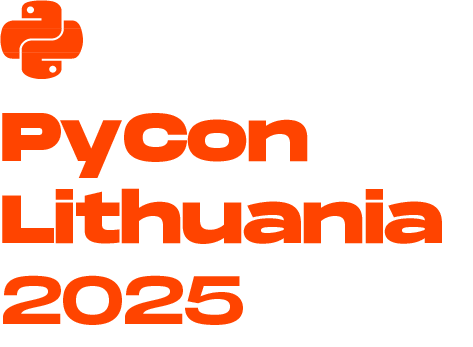

Slow Productivity AI
Enhancing Deep Work with Open-Source Automation
Piotr Stepinski
Infinitii ai
2025-04-25
About Me
- CTO at infinitii ai
- GitHub: stepinski
- LinkedIn: stepinsky
- Email: stepinski@gmail.com
The Slow Productivity Philosophy
Cal Newport’s Concept
“In his book Slow Productivity, Cal Newport argues that modern work culture prioritizes busyness over effectiveness, leading to stress, shallow work, and burnout.”
- Natural pace
- Meaningful work focus
- Distraction reduction
My “Why”
The Problem with Personal Productivity
- Daily routine struggles:
- Writing everything in notes but lacking a consistent system
- Trying various tools but always reverting to basic note-taking
- Scattered information across notes, emails, and meeting records
- Starting productivity systems but failing to maintain them
- Difficulty finding and connecting related information
The Note-Taking Struggle
- Tried various techniques:
- PARA method
- Zettelkasten for unstructured thinking
- First obstacle: Habit consistency
- Can consistently take notes…
- …but they’re unstructured and disconnected
- No time for proper review and organization
My Core Belief
AI Can Free Our Creative Potential
Through AI we can automate the dull and time-consuming stuff to free up more creative potential of our minds
- Notes organization shouldn’t require manual effort
- Task extraction can be automated
- Knowledge connections can be discovered automatically
- All while maintaining privacy and control
How This Aligns with Slow Productivity
- Automate the shallow work
- Let AI handle organizing, connecting, task-tracking
- Preserve mental space for deep work
- Free from organizational overhead
- Reduce cognitive load
- One system instead of many disconnected tools
The Technical Vision
Ideal Workflow Components

Slow Productivity AI Architecture
Unified Knowledge Sources
- Obsidian notes (primary knowledge base)
- Supernote handwritten content (OCR processed)
- GitHub Issues (work tasks)
- Email and Teams conversations (transcribed)
- Browser bookmarks and read-later content
Core Processing Components
| Component | Role | Slow Productivity Benefit |
|---|---|---|
| Hugging Face Transformers | Local NLP for meaning extraction | Privacy, no context-switching |
| n8n | Self-hosted automation workflows | Control, no third-party dependencies |
| Obsidian + GitHub Issues | Knowledge and task management | Centralized system, reduced tool switching |
| Local LLM | Same engine for all tools | Consistent context across interfaces |
Implementation Details
The Local LLM Setup
Notes Processing with LlamaIndex
from llama_index import VectorStoreIndex, SimpleDirectoryReader
from llama_index.llms import Ollama
def process_obsidian_notes():
# Path to vault
OBSIDIAN_PATH = "/path/to/obsidian/vault"
# Load documents
documents = SimpleDirectoryReader(
OBSIDIAN_PATH, recursive=True
).load_data()
# Connect to LLM
llm = Ollama(model="llama3:8b", url="localhost:11434")
# Create index
index = VectorStoreIndex.from_documents(documents)
# Extract tasks
tasks = []
for doc in documents:
if "TODO" in doc.text or "- [ ]" in doc.text:
tasks.extend(extract_tasks(doc.text, llm))
return tasksn8n Automation Workflow
n8n Workflow for Task Extraction
- Scheduled workflows run during non-focus time
- Event-based triggers for new notes or changes
- Multi-step processing to extract and structure tasks
Task Management Integration
# GitHub Issues integration
def create_github_tasks(tasks):
from github import Github
# Connect to GitHub
g = Github(os.environ.get("GITHUB_TOKEN"))
repo = g.get_repo("username/tasks-repo")
for task in tasks:
# Avoid duplicates
if not is_duplicate_task(repo, task["title"]):
# Create issue
repo.create_issue(
title=task["title"],
body=f"Source: {task['source']}",
labels=[task["priority"]]
)Solution Demonstration: Key Pipelines
Demonstration Approach
Demo Flow Visualization
Pipeline 1: Notes Improvement
Before:
Meeting with team (04/12)
discussed pipeline issues - john mentioned
permissions problem
todo look into this next week
API seems slow - maybe caching?
talk to devops about K8s resourcesAfter:
# Team Sync (2025-04-12)
## Participants
- Team, John
## Topics
- Pipeline permissions issue
- API performance concerns
## Actions
- [ ] Investigate permissions (Due: 4/19)
- [ ] Discuss K8s with DevOps (Due: 4/15)Pipeline 2: Project Summary Report
n8n Workflow:
+------------------+ +----------------------+
| Obsidian Vault | | GitHub Issues API |
| Change Trigger | | (Create Issue) |
+--------+---------+ +-----------+----------+
| |
v |
+--------+---------+ |
| Local LLM Node | |
| (Extract Tasks) | |
+--------+---------+ |
| |
v |
+--------+---------+ |
| Task Processing | |
| (Format & Sort) | |
+--------+---------+ |
| |
v |
+--------+---------+ +---------------+----------+
| Filter Tasks +->+ Create GitHub Issue |
| (Priority > Med) | | for Each Extracted Task |
+------------------+ +--------------------------+- Scheduled workflow runs daily at 6am (before work)
- Processes new notes and updates since last run
- Generates executive summary of active projects
- Demo output: Clean markdown with actionable insights
Pipeline 3: Daily Template
# Daily Focus (2025-04-25)
## Priority Tasks
1. [API-123] Finalize pipeline params
2. [INFRA-45] Review K8s configs
3. [TEAM-12] Prepare sprint planning
## Updates
- PR #234 merged (ML pipeline)
- QA checks passing
- Docs ready for review
## Focus Blocks
09:00-11:00: Deep work - API-123
13:00-14:30: Team meeting
15:00-17:00: Deep work - INFRA-45Conclusion
The Slow Productivity AI Advantage
- Consistency without effort - maintain notes without organizational overhead
- Privacy by design - fully local processing, your data stays yours
- Reduced cognitive load - automation frees mental space for creative work
- Deep work preserved - minimize context switching and distractions
“The goal isn’t faster productivity, but deeper, more meaningful productivity.”
Key Takeaways
- Slow productivity is about meaningful output, not speed
- AI should reduce friction, not add more digital noise
- Automation should serve deep work, not interrupt it
- Privacy and ownership matter
- Local, open-source LLMs make this possible today
- Your knowledge base remains fully under your control
- Start small, but think holistically
- Begin with one pipeline that solves your biggest pain point
- Build toward a system that works the way your mind works
Resources
- GitHub repository: github.com/stepinski/slow-productivity-ai
- Presentation slides: github.com/stepinski/pycon-lithuania-2025
- Recommended reading: “Slow Productivity” by Cal Newport
Questions?
PyCon Lithuania 2025